Farming Techniques
1. 🇮🇳 Indian Farming Techniques
-
Rice Paddy Cultivation: Flooded‑field rice cultivation.
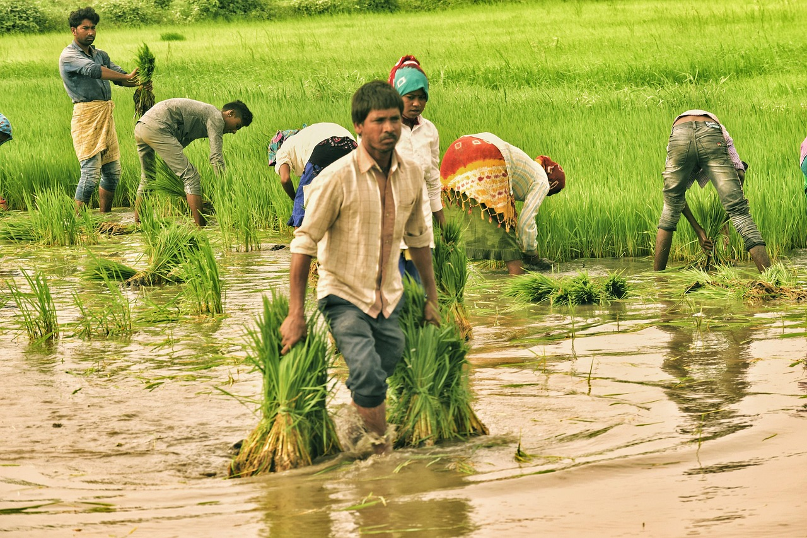
-
Wheat Farming: Major Rabi crop in northern India.
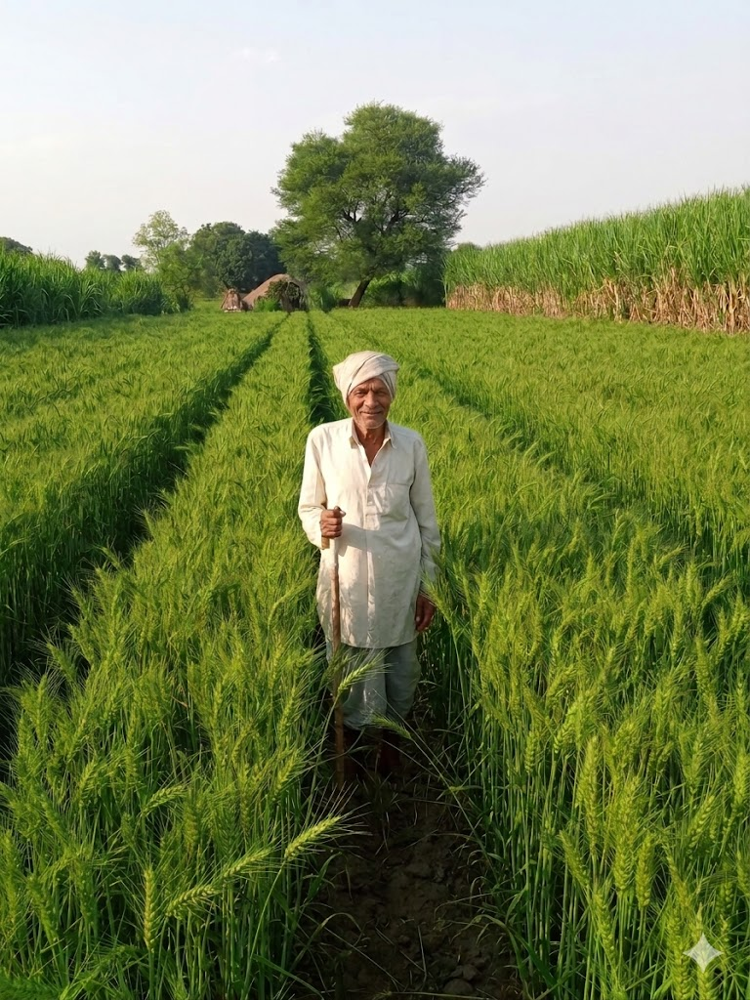
-
Indian Farmer Practices: Combination of traditional and modern methods.
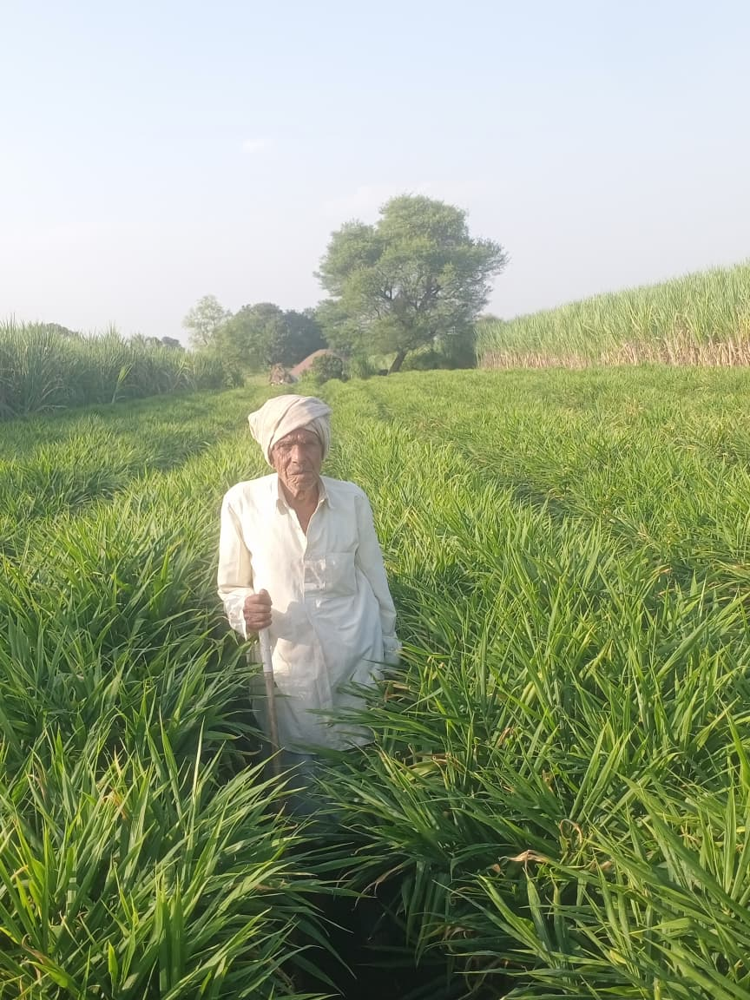
-
Irrigation Systems: Canal, drip, and sprinkler irrigation.
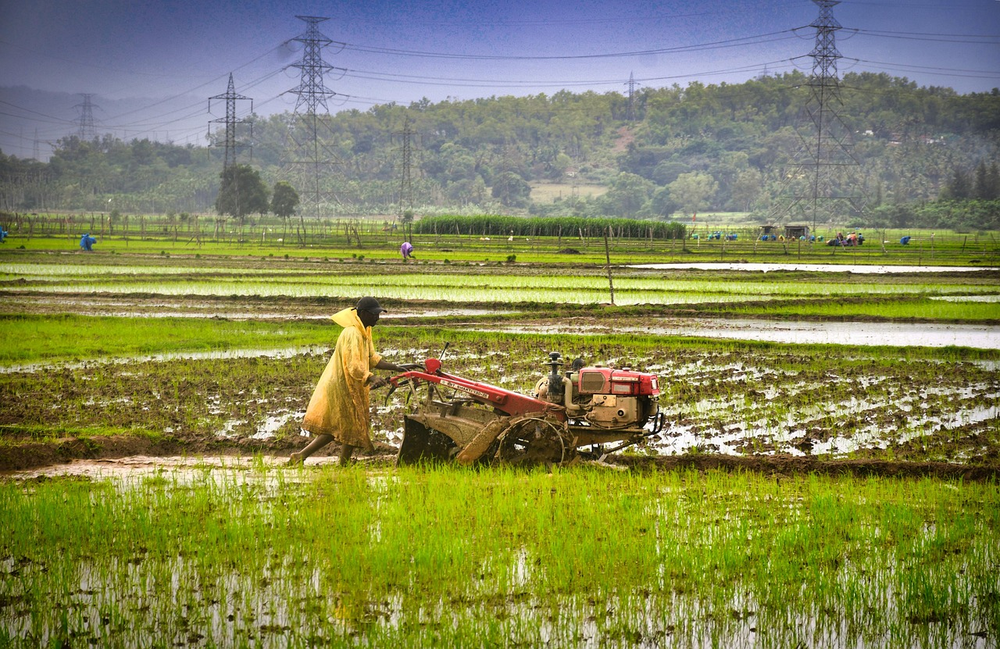
-
Organic Farming in India: Eco‑friendly agricultural approach.

-
Ginger Farming: Important spice crop grown in India.
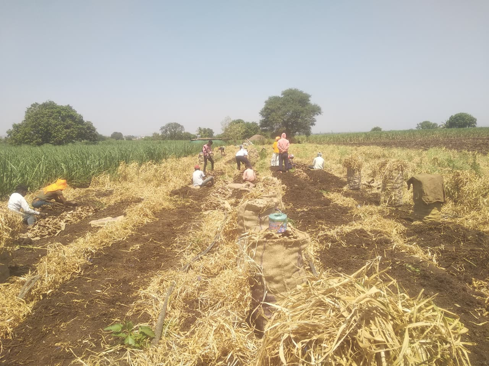
2. Organic Farming Techniques
-
Crop Rotation: Alternating crops to improve soil fertility.
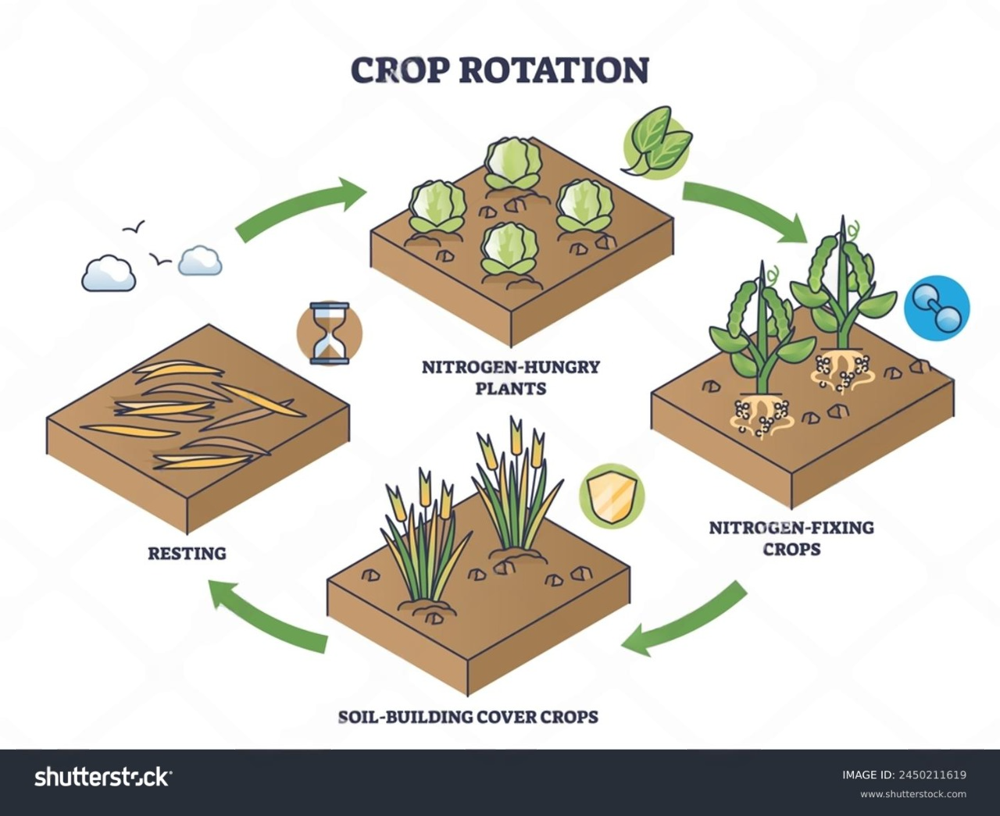
-
Green Manure: Growing plants to enrich soil nutrients naturally.
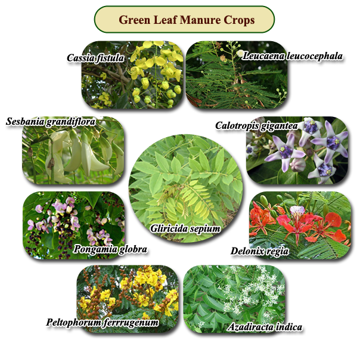
-
Biofertilizers: Natural microorganisms improving soil health.
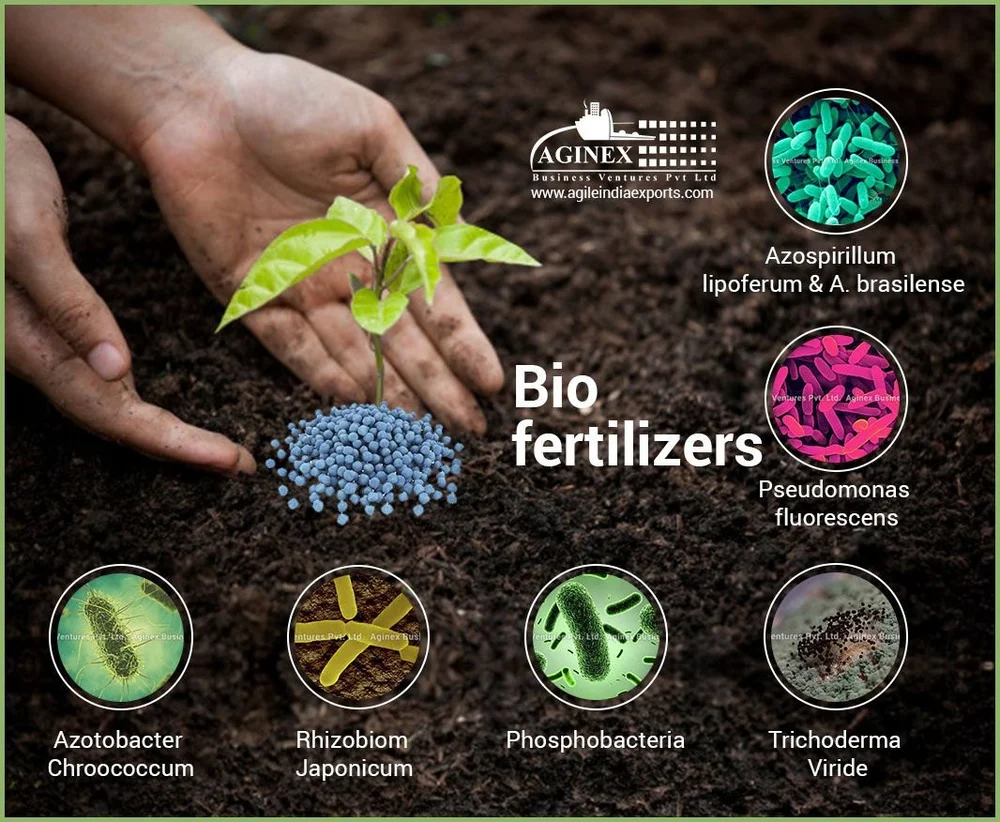
-
Composting: Recycling organic waste into nutrient‑rich manure.
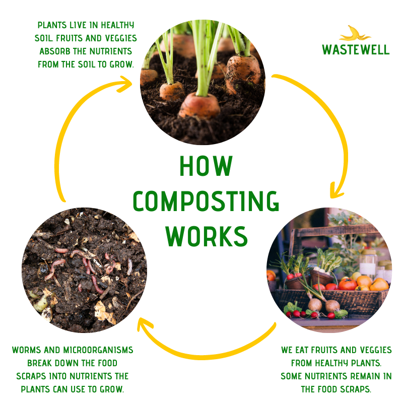
3. Traditional Farming Techniques
-
Mixed Farming: Crops and livestock managed together.
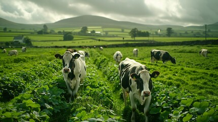
-
Terrace Farming: Step‑wise farming on hills to reduce erosion.
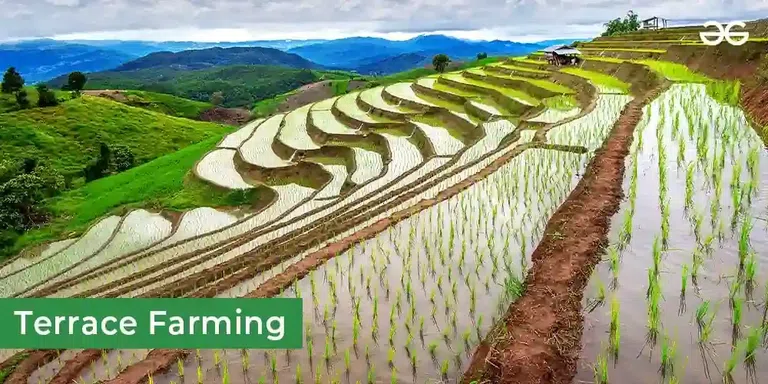
-
Manual Farming: Farming using traditional tools and labor.
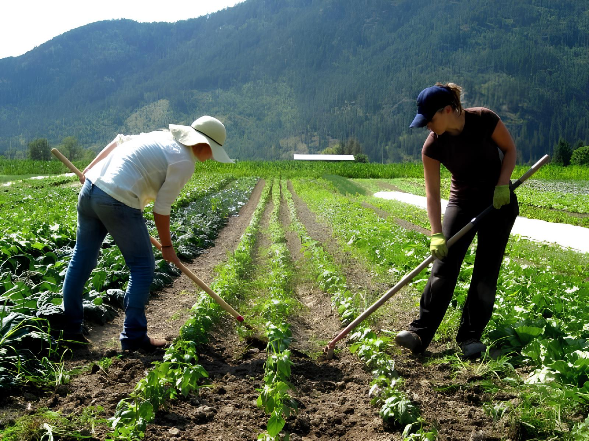